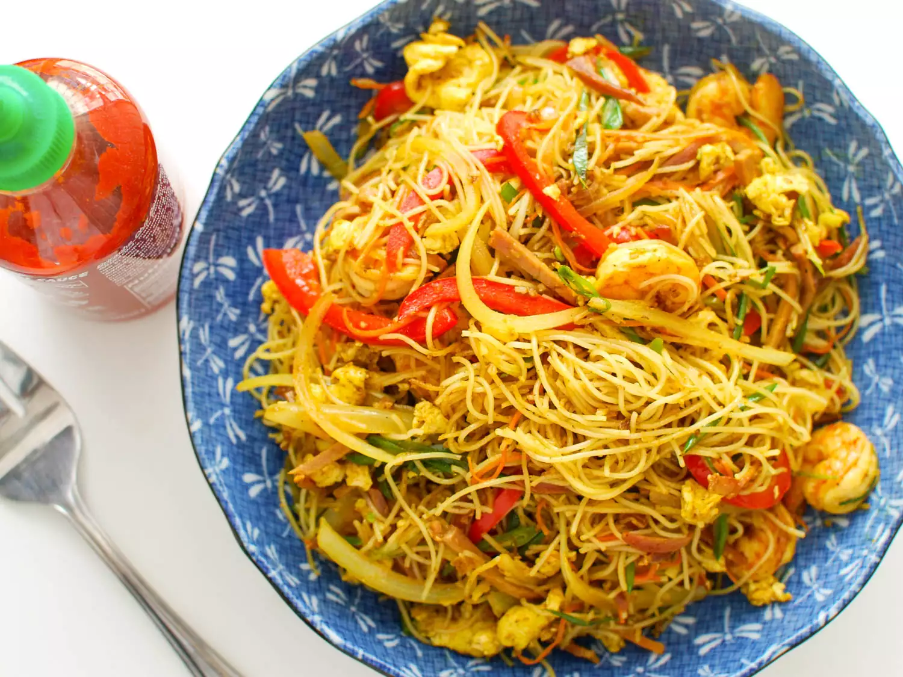

Noodles

Description
Noodles are a type of food made from unleavened dough which is either rolled flat and cut, stretched, or extruded, into long strips or strings. Noodles are a staple food in many cultures and made into a variety of shapes.
Ingredients
- 250 gm parboiled fresh noodles
- 1 cup chopped,grated cabbage
- 1 cup sliced onion
- 2 teaspoon powdered black pepper
- 2 tablespoon sunflower oil
- 3 teaspoon garlic paste
- 1 cup finely chopped bean
- 3 egg
- 1 cup grated carrot
- 7 sliced green chilli
- Salt as required
- 3 teaspoon ginger paste
- 1 teaspoon ajinomoto
- 2 tablespoon soy sauce
Steps
- Boil the noodles
- Toss the veggies and cook the eggs
- Garnish and indulge in the goodness